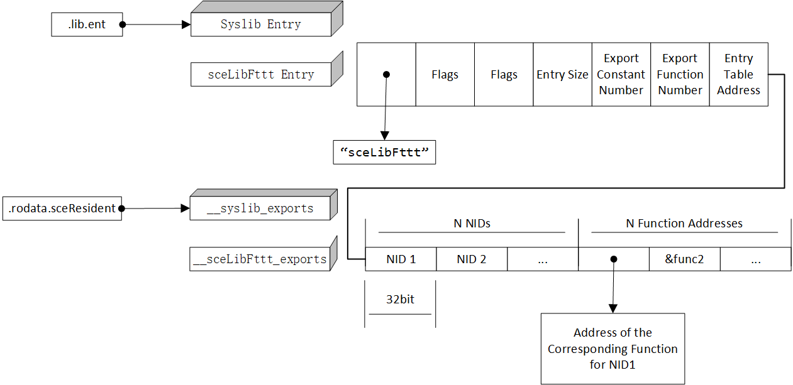

Stub Libraries
推荐阅读
uofwGithub wiki https://github.com/uofw/uofw/wikiPSP Modules, Exports, Imports and Patches https://uofw.github.io/upspd/docs/
uofwDocument
pspsdk/src/samples/prx/
当我们之前链接第三方库时，都是直接与是真正包含代码的库链接。
现在我们希望在程序运行时动态地载入其他模块，依然可以使用静态链接，不过链接的是只包含模块名称、NID、函数接口和其空实现的存根库(Stub/Resident Library)。通过PSPSDK提供给我们的加载模块的函数，我们可以实现模块运行时的加载。
Multiple programs can be loaded at the same time in PSP™ memory.
Use other modules in your own module Dynamically.
编写可被其他模块动态加载的PRX模块
A PRX-format module can be used as a resident library. A resident library provides some of its functions to another module.
我们通过编写导出表来指定自己模块中哪些函数可以被外部访问
并通过向模块使用者提供导入表使其能引入自己的模块。
由于使用者能够导入的函数也就是编写者导出的函数，
我们只需要编写一次导出表，就可以通过导出表生成导入表。
Step 1：编写导出表，将导出表嵌入PRX模块。
- 撰写PRX程序的C代码：不写
main函数，写module_start()和module_stop()函数Hint
注意：请于module_start()函数中加一行对外部prx的调用
printf()函数调用。否则在由ELF文件生成PRX文件时会出现缺少.lib.stub段的问题。这是由于目前prx文件必须同时含有导入表和导出表导致的。 - 编写导出表(
.exp后缀的文本文件)，指定哪些函数可被其他模块引用导出格式。
- 必须导出：syslib
- 自定义导出：
据说不推荐导出变量。
- 对导出表使用
psp-build-exports -b生成C代码生成的C代码的作用实际上是在#include <pspmoduleexport.h> #define NULL ((void *) 0) extern int module_info; extern int module_sdk_version; static const unsigned int __syslib_exports[4] __attribute__((section(".rodata.sceResident"))) = { 0xF01D73A7, 0x11B97506, (unsigned int) &module_info, (unsigned int) &module_sdk_version, }; extern int sceLibFttt_02D7F94B; extern int sceLibFttt_099EF33C; extern int sceLibFttt_0DA7535E; extern int sceLibFttt_27F6E642; extern int sceLibFttt_2F67356A; extern int sceLibFttt_3AEA8CB6; extern int sceLibFttt_3C4B7E82; extern int sceLibFttt_472694CD; extern int sceLibFttt_48293280; extern int sceLibFttt_48B06520; extern int sceLibFttt_5333322D; extern int sceLibFttt_568BE516; extern int sceLibFttt_574B6FBC; extern int sceLibFttt_57FCB733; extern int sceLibFttt_5C3E4A9E; extern int sceLibFttt_5DCF6858; extern int sceLibFttt_67F17ED7; extern int sceLibFttt_681E61A7; extern int sceLibFttt_74B21701; extern int sceLibFttt_980F4895; extern int sceLibFttt_A834319D; extern int sceLibFttt_AA3DE7B5; extern int sceLibFttt_BB8E7FE6; extern int sceLibFttt_BC75D85B; extern int sceLibFttt_CA1E6945; extern int sceLibFttt_DCC80C2F; extern int sceLibFttt_EE232411; extern int sceLibFttt_F8F0752E; static const unsigned int __sceLibFttt_exports[56] __attribute__((section(".rodata.sceResident"))) = { 0x02D7F94B, 0x099EF33C, 0x0DA7535E, 0x27F6E642, 0x2F67356A, 0x3AEA8CB6, 0x3C4B7E82, 0x472694CD, 0x48293280, 0x48B06520, 0x5333322D, 0x568BE516, 0x574B6FBC, 0x57FCB733, 0x5C3E4A9E, 0x5DCF6858, 0x67F17ED7, 0x681E61A7, 0x74B21701, 0x980F4895, 0xA834319D, 0xAA3DE7B5, 0xBB8E7FE6, 0xBC75D85B, 0xCA1E6945, 0xDCC80C2F, 0xEE232411, 0xF8F0752E, (unsigned int) &sceLibFttt_02D7F94B, (unsigned int) &sceLibFttt_099EF33C, (unsigned int) &sceLibFttt_0DA7535E, (unsigned int) &sceLibFttt_27F6E642, (unsigned int) &sceLibFttt_2F67356A, (unsigned int) &sceLibFttt_3AEA8CB6, (unsigned int) &sceLibFttt_3C4B7E82, (unsigned int) &sceLibFttt_472694CD, (unsigned int) &sceLibFttt_48293280, (unsigned int) &sceLibFttt_48B06520, (unsigned int) &sceLibFttt_5333322D, (unsigned int) &sceLibFttt_568BE516, (unsigned int) &sceLibFttt_574B6FBC, (unsigned int) &sceLibFttt_57FCB733, (unsigned int) &sceLibFttt_5C3E4A9E, (unsigned int) &sceLibFttt_5DCF6858, (unsigned int) &sceLibFttt_67F17ED7, (unsigned int) &sceLibFttt_681E61A7, (unsigned int) &sceLibFttt_74B21701, (unsigned int) &sceLibFttt_980F4895, (unsigned int) &sceLibFttt_A834319D, (unsigned int) &sceLibFttt_AA3DE7B5, (unsigned int) &sceLibFttt_BB8E7FE6, (unsigned int) &sceLibFttt_BC75D85B, (unsigned int) &sceLibFttt_CA1E6945, (unsigned int) &sceLibFttt_DCC80C2F, (unsigned int) &sceLibFttt_EE232411, (unsigned int) &sceLibFttt_F8F0752E, }; const struct _PspLibraryEntry __library_exports[2] __attribute__((section(".lib.ent"), used)) = { { NULL, 0x0000, 0x8000, 4, 2, 0, (unsigned int *) &__syslib_exports }, { "sceLibFttt", 0x0011, 0x0001, 4, 0, 28, (unsigned int *) &__sceLibFttt_exports }, };.rodata.sceResident段中以连续的结构体数组存入每个导出的Library中导出函数的NID和导出的函数的地址。然后在.lib.ent段使用模块名和.rodata.sceResient中对应项的地址创建相应的导出条目。

struct _PspLibraryEntry {
20 const char * name;
21 unsigned short version;
22 unsigned short attribute;
23 unsigned char entLen;
24 unsigned char varCount;
25 unsigned short funcCount;
26 void * entrytable;
27
};
| Segment Name | Export Index | Export Entry | Data | Type |
|---|---|---|---|---|
| .rodata.sceResident | 1 | __syslib_exports | MagicNumber | uint32 |
| MagicNumber | uint32 | |||
| Address of module_info in .rodata.moduleInfo | uint32 | |||
| Address of module_sdk_version in .rodata.moduleInfo | uint32 | |||
| 2 | __sceLibFttt_exports | 1st Function NID | uint32 | |
| Function NID ... | uint32 | |||
| Address of 1st Function | Addr | |||
| Address of Functions... | Addr | |||
| .lib.ent | 1 | syslib | Library Name(NULL) | const char* |
| 0x0000 | u16 | |||
| 0x8000 | u16 | |||
| 4 | u8 | |||
| 2 Export Var Number | u8 | |||
| 0 Export Fuction Number | u16 | |||
| &__syslib_exports | Addr |
-
将步骤3中的C代码进行编译，与源程序相链接，从而将导出表信息嵌入源程序。
build.mak注意，链接时需要指定ifdef PRX_EXPORTS # 预先指定 PRX_EXPORTS = your_name.exp EXPORT_OBJ=$(patsubst %.exp,%.o,$(PRX_EXPORTS)) # 将其纳入构建目标 EXTRA_CLEAN += $(EXPORT_OBJ) # 将可重定位目标文件纳入clean目标LDFLAGS = -nostartfiles以避免出现main函数符号未定义的问题。至此，导出表已嵌入PRX文件，接下来的步骤是为将要使用该PRX文件的模块准备的
在编译过程中指定段。 在.exp文件中填写的函数名的主要作用是在编译和连接的过程中找到函数实现的地址。在PSP内核调用外部prx时，模块名和
NID成为唯一的标识符。Step 2: 从导出表生成导入表
- 对上一步编写的导出表使用
psp-build-exports -k生成存根.S文件（module stubs / import table） - （可选）编译
.S存根文件至.o可重定位目标文件并通过ar打包成.a静态链接库存档文件即得到存根库
- 对上一步编写的导出表使用
在程序中动态加载PRX模块
-
写代码时：包含存根库的头文件 使用PSPSDK中加载动态库的函数 sceKernelLoadModule sceKernelFindModuleByUID sceKernelStartModule
-
链接时：编译存根
.S文件至并与之链接 / 链接存根库OBJS中指定.S->.o的文件名
.rodata.sceResident存入导入的模块名 .lib.stub存入Stub表项 // 其中有一个指针指向模块名。 // flags // 5 (entry size) x32bit // 指向NID表 // 指向.sceStub.text .sceStub.text存入函数空实现，//包括.lib.stub中Stub表项的位置 .rodata.sceNid存入NID
.macro IMPORT_START module, flags_ver
.set push
.section .rodata.sceResident, "a"
.word 0
__stub_modulestr_\module:
.asciz "\module"
.align 2
.section .lib.stub, "a", @progbits
.global __stub_module_\module # 定义变量__stub_module即为此处地址
__stub_module_\module:
.word __stub_modulestr_\module # Module Name String Addr
.word \flags_ver // Flags
.word 0x5
.word __executable_start # 在psp-fixup-imports中重定位，指向NID表
.word __executable_start # 在psp-fixup-imports中重定位，指向sceStub.text
.set pop
.endm
.lib.stub has Stub Entries
.macro IMPORT_FUNC module, funcid, funcname
.set push
.set noreorder
.extern __stub_module_\module
.section .sceStub.text, "ax", @progbits
.globl \funcname // Make the symbol global
.type \funcname, @function
.ent \funcname, 0
\funcname:
.word __stub_module_\module # Address of Module，在psp-fixup-imports中重定位用。被替换为jr ra;
.word \funcid # NID，在psp-fixup-imports中重定位用, nop.
.end \funcname
.size \funcname, .-\funcname
.section .rodata.sceNid, "a"
.word \funcid
.set pop
.endm
在psp-fixup-imports中利用.stub.text中存储的信息，重定位.lib.stub中NID地址与存根函数地址，并将.stub.text中内容填写为jr ra与nop。
https://uofw.github.io/upspd/docs/SilverSpring_Blog/my.malloc.us/silverspring/category/nids/index.html
https://artart78.github.io/PSPLibDoc/